Topic 7.18 · Symmetry and Transformations · Lesson 6 of 6
Combining Transformations
Real movements are rarely one step: a robot arm turns, then slides. Today you apply one transformation after another, and find the single transformation that does the same job.
By the end you’ll know…
Transformations can be applied one after another, each acting on the image the previous one produced.
The result of two transformations can sometimes be described as a single transformation.
Two reflections in parallel mirror lines give a translation; two reflections in perpendicular mirror lines give a rotation of 180 degrees.
The order in which two transformations are applied can change the result.
By the end you can
G4Carry out a sequence of two transformations on a shape.
G5Describe the single transformation equivalent to a given combination.
Work down the page at your own pace. Write every answer in your book first, then click to check it.
01
Do Now
About 5 minutes
1
Reflect the point (4, 2) in the line x = 1.
(-2, 2).
2
Reflect the point (-2, 2) in the line x = 5.
(12, 2).
3
Reflect the point (3, 5) in the line y = 2.
(3, -1).
4
Reflect the point (0, 4) in the line y = -1.
(0, -6).
Remember these?
LAST LESSONEvery point of a shape moves 2 left and 5 up. Describe the transformation fully.
A translation by -25.
LAST WEEKReflect the point (6, -1) in the line y = x.
(-1, 6).
LAST TERMSolve 4x - 3 < 17.
Add 3 to both sides: 4x < 20. Divide both sides by 4: x < 5.
LAST YEARA square has corners (1, 1), (3, 1), (3, 3) and (1, 3). It moves 2 squares up. Write its new corners.
(1, 3), (3, 3), (3, 5) and (1, 5).
02
Learn
Read each card, then follow the worked examples one step at a time.
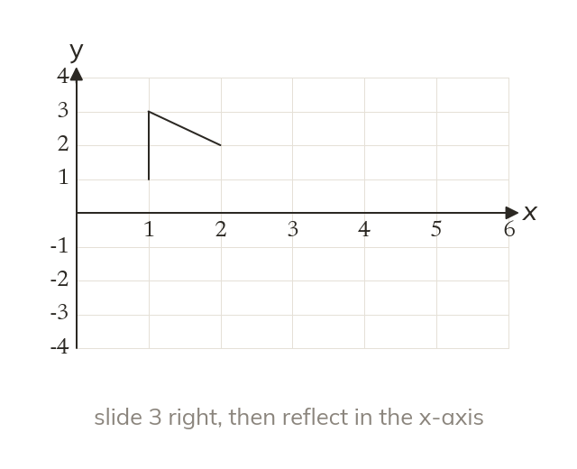
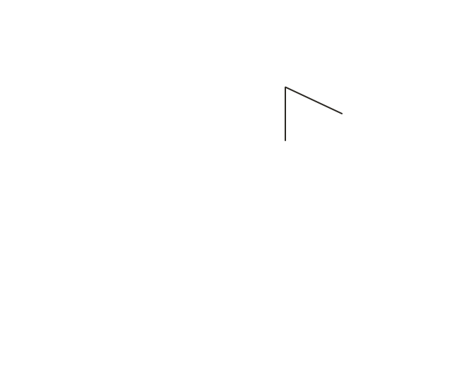
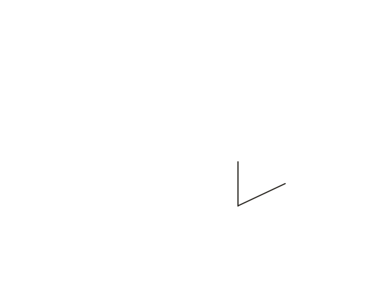
One after another
In a combination, the second transformation acts on the first image. Here the flag slides, then its image is reflected.
In a combination, the second transformation acts on the image that the first produced. So the flag slides to a new place, and then that new flag is reflected.
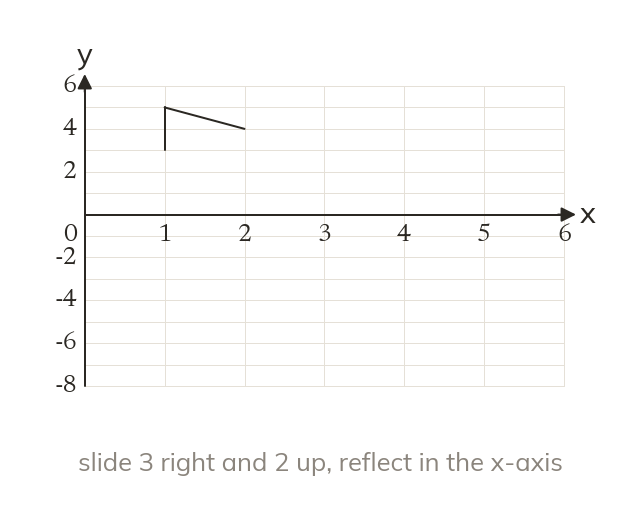
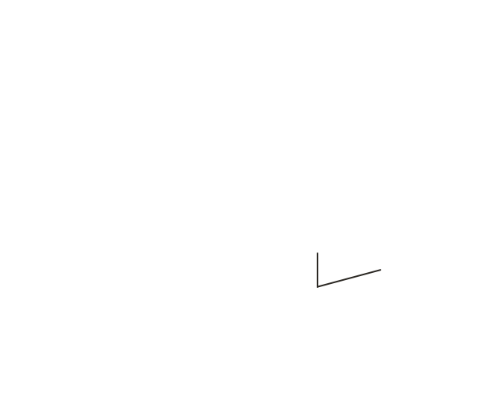
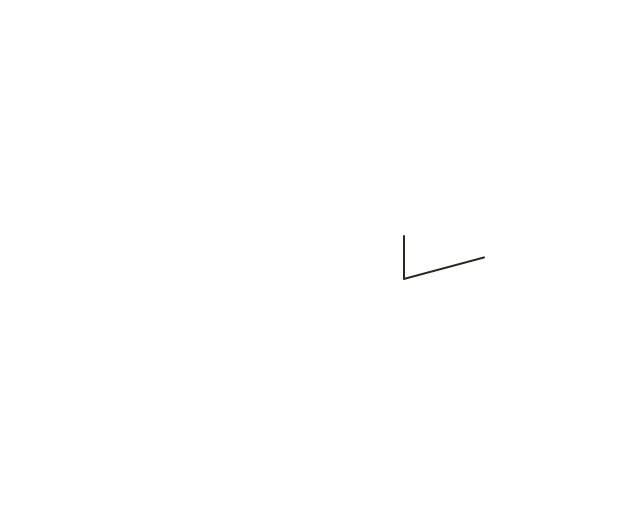
Order can matter
Translating then reflecting can give a different image from reflecting then translating. So carry out the two in the order given.
WORKED EXAMPLE A
Translate the flag by -41, then reflect that image in the y-axis.
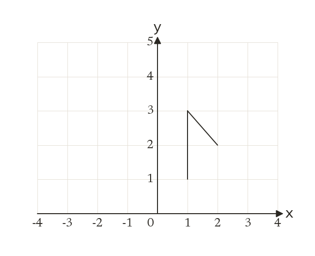
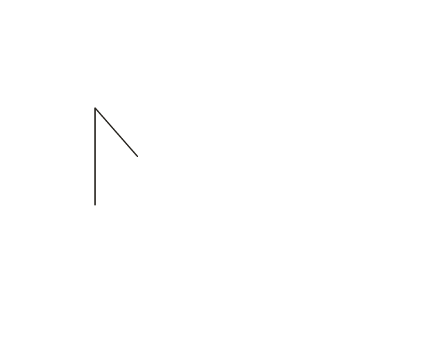
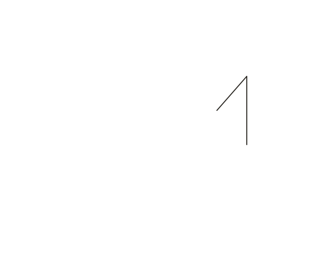
Firstevery point moves 4 left and 1 up, so the foot (1, 1) goes to (-3, 2)
Secondreflect the new flag, so (-3, 2) goes to (3, 2)
Final flagfoot (3, 2), top (3, 4), bar end (2, 3)
WORKED EXAMPLE B
Rotate the flag 180° about (0, 0), then reflect that image in the x-axis.
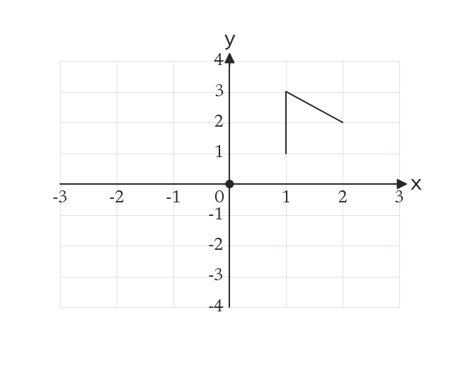
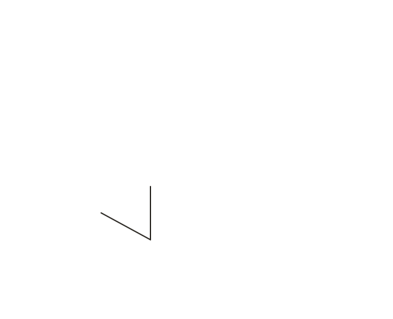
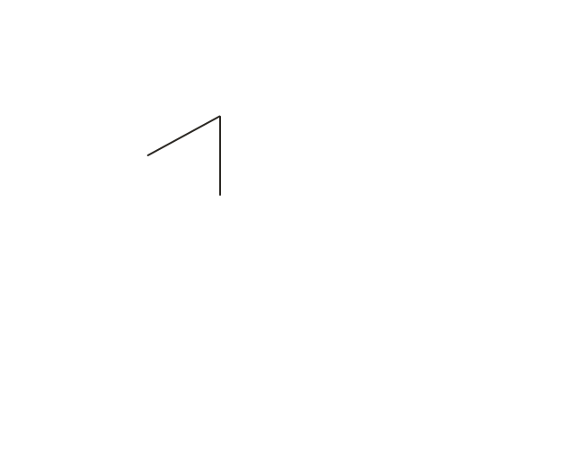
Firstthe half turn takes (1, 1) to (-1, -1), (1, 3) to (-1, -3), and (2, 2) to (-2, -2)
Secondreflect the new flag in the x-axis, so (-1, -1) goes to (-1, 1)
Final flagfoot (-1, 1), top (-1, 3), bar end (-2, 2)
YOUR TURN · a
Translate the point (2, 1) by 32, then reflect the image in the line y = 1.
(5, 3), then (5, -1).
YOUR TURN · b
Reflect the point (2, 1) in the line y = 1 first, then translate it by 32.
(2, 1) is on the line, so it stays; then (5, 3). The order changed the answer.
03
Check your understanding
Pick an answer. If it's wrong, the feedback tells you which mistake it was.
In a combination of two transformations, what does the second transformation act on?
Not quite. The second one acts on the image from the first, not the original.
Yes. Do the first, then do the second to its image.
Not quite. The second one acts only on the first image.
Not quite. Do both, in order: the second acts on the first image.
The point (1, 2) is reflected in the x-axis, and that image is then translated by 40. Where does it end?
Not quite. Reflect first: (1, −2). Then translate that: (5, −2).
Not quite. That's only the first step. Now translate: (5, −2).
Yes.(1, 2) → (1, −2) → (5, −2).
Not quite.40 means 4 right, not left: (5, −2).
Translate the point (0, 3) by 20, then translate that image by 0-5.
Yes.(0, 3) → (2, 3) → (2, −2).
Not quite. Do the second translation too: 5 down gives (2, −2).
Not quite. The second move acts on (2, 3), not on (0, 3).
Not quite.2 right and 5 down: (2, −2).
04
Practise
mark as you go
Checkpoint. Reflect the triangle with corners (1, 1), (3, 1) and (1, 2) in the y-axis, then rotate that image 180° about (0, 0). Write the corners of the final image.Show your teacher before you go on
1
Translate (3, 1) by 24, then reflect the image in the x-axis.
Translate: (5, 5) Reflect: (5, -5)
2
Reflect (2, 3) in the y-axis, then translate the image by 1-2.
Reflect: (-2, 3) Translate: (-1, 1)
3
Rotate (4, 1) through 180° about (0, 0), then translate the image by 55.
Rotate: (-4, -1) Translate: (1, 4)
4
Reflect (1, 2) in the line y = x, then reflect the image in the x-axis.
Reflect in y = x: (2, 1) Reflect in the x-axis: (2, -1)
5
Do question 2 in the other order: translate first, then reflect. Is the answer the same?
Translate: (3, 1) Reflect: (-3, 1) No: the order changed the answer
EXT
Reflect the triangle (1, 1), (2, 1), (1, 3) in the y-axis, then rotate it 180° about (0, 0). Write the final corners.
Read each card, then follow the worked examples one step at a time.
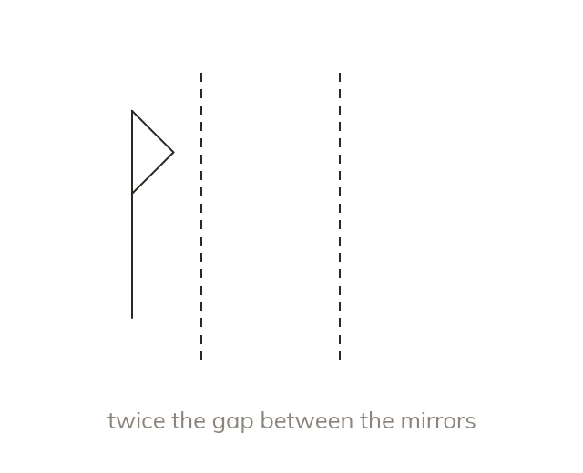
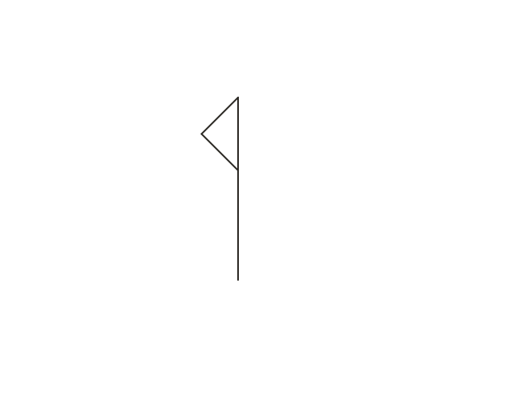
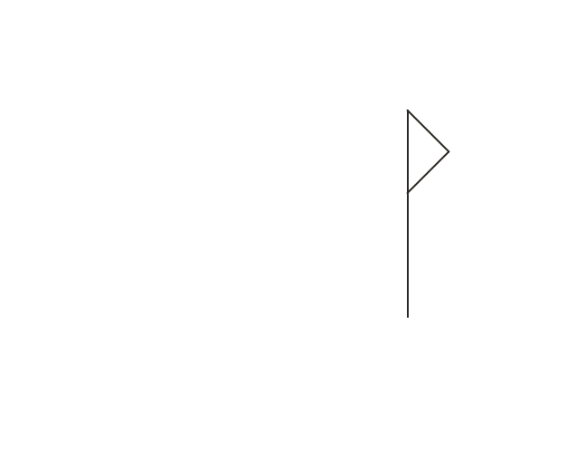
Two parallel mirrors
Reflecting in two parallel mirror lines gives a translation. The shape moves twice the distance between the lines, at right angles to them.
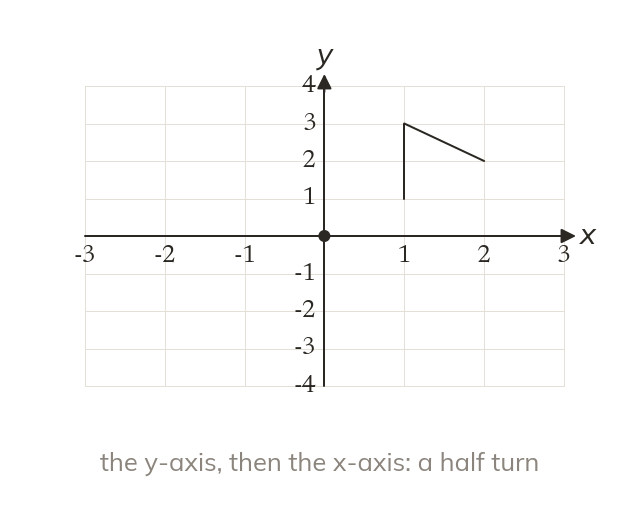
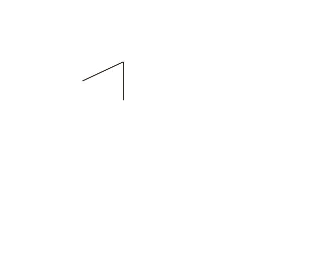
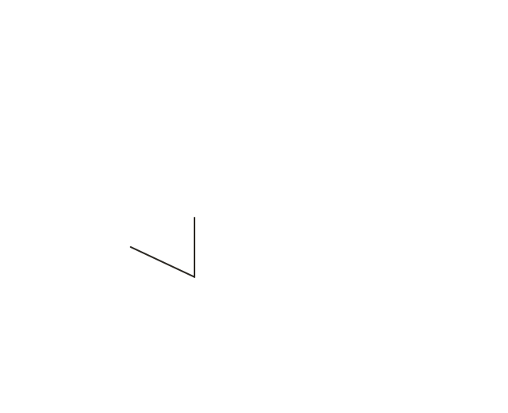
Two perpendicular mirrors
Reflecting in two perpendicular mirror lines gives a half turn. The centre of the half turn is the point where the mirror lines cross.
WORKED EXAMPLE C
Reflect in the y-axis, then in x = 3. Which single transformation does both?
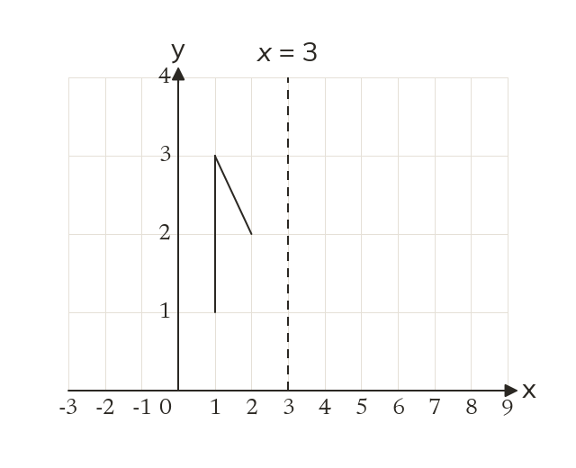
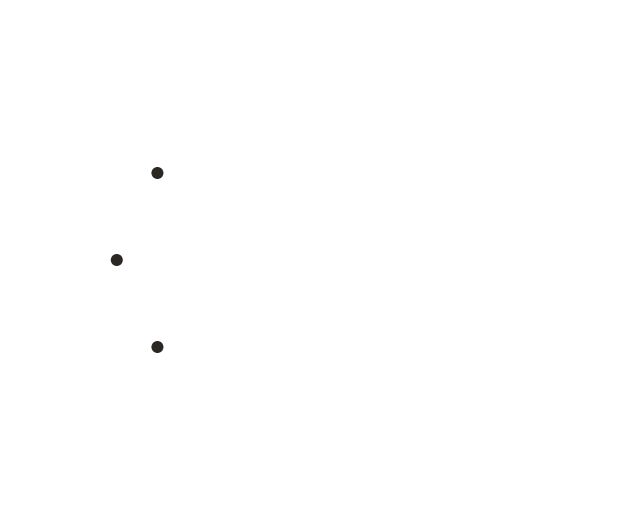
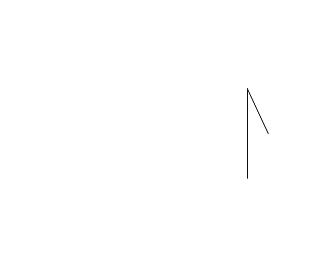
First image(1, 1) goes to (-1, 1)
Second image(-1, 1) goes to (7, 1)
Single transformationa translation by 60, twice the gap of 3 between the lines
WORKED EXAMPLE D
Rotate 90° clockwise about (0, 0), twice. Which single transformation does both?
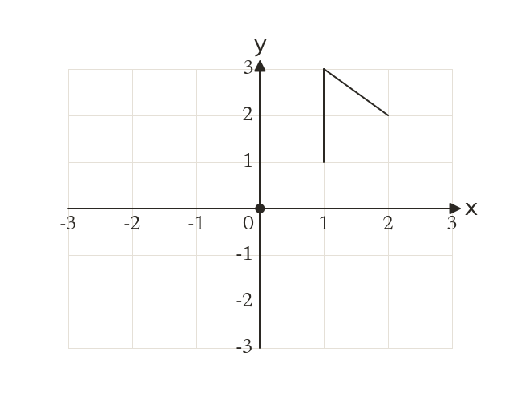
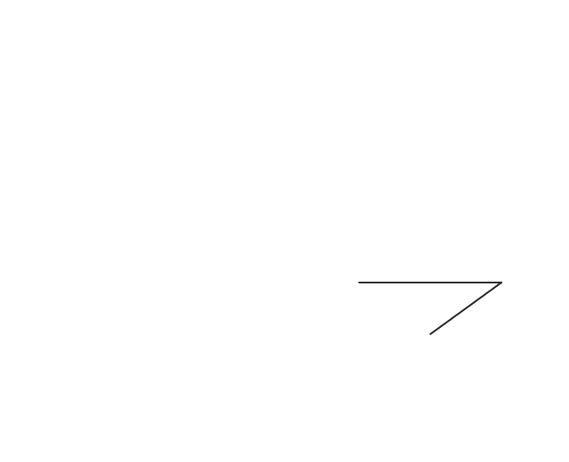
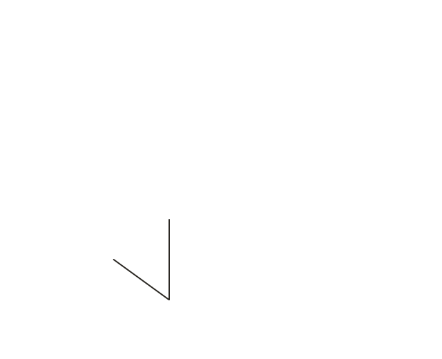
First image(1, 1) goes to (1, -1)
Second image(1, -1) goes to (-1, -1)
Single transformationa rotation of 180° about (0, 0), two quarter turns
YOUR TURN · c
A shape is reflected in the line y = 1, then in the line y = 4. Describe the single transformation that does both.
A translation by 06: twice the gap of 3, upwards.
YOUR TURN · d
A shape is reflected in the line x = 1, then in the line y = 3. Describe the single transformation that does both.
A rotation of 180° about (1, 3), where the mirror lines cross.
06
Check your understanding
Pick an answer. If it's wrong, the feedback tells you which mistake it was.
A shape is reflected in the line x = 2, then in the line x = 7. Which column vector describes the single translation that does the same?
Not quite. The lines are 5 apart. Two reflections move it twice that: 10.
Not quite. The mirrors are vertical, so the shape moves across: 100.
Yes. Twice the gap of 5: 100.
Not quite. Use the gap, 7 − 2 = 5, then double it: 10.
A shape is reflected in the line x = 2, then in the line y = 5. Which single transformation does the same?
Not quite. Two reflections in crossing lines give a rotation.
Not quite. The lines cross at right angles, so it's a rotation, not a translation.
Yes. The mirrors cross at (2, 5) at right angles: a half turn about (2, 5).
Not quite. The centre is where the mirrors cross: (2, 5).
A shape is rotated 90° anticlockwise about (0, 0), then 180° about (0, 0). What single rotation about (0, 0) does the same?
Not quite.90° + 180° = 270° anticlockwise, which is 90° clockwise.
Yes.270° anticlockwise is the same as 90° clockwise.
Not quite.270° anticlockwise is 90° clockwise, not 270° clockwise.
Not quite. Include both turns: 90° + 180° = 270° anticlockwise.
07
Practise
mark as you go
Checkpoint. A shape is reflected in the line y = 2, then in the line y = -1. Describe fully the single transformation that does both.Show your teacher before you go on
1
A shape is reflected in the line x = 3, then in x = 5. Describe the single transformation.
Twice the gap of 2 A translation by 40
2
A shape is reflected in the line y = 0, then in y = 5. Describe the single transformation.
Twice the gap of 5 A translation by 010
3
A shape is reflected in the line x = 4, then in y = 2. Describe the single transformation.
A rotation of 180° about (4, 2), where the lines cross
4
A shape is rotated 90° anticlockwise about (0, 0), three times. Describe the single transformation.
A rotation of 90° clockwise about (0, 0)
5
A shape is translated by 31, then by -14. Describe the single transformation.
A translation by 25
6
A shape is rotated 90° anticlockwise, then 90° clockwise, about the same centre. What happens?
The shape ends where it started
EXT
A shape is reflected in the line x = 5, then in x = 2. Describe the single transformation. Why is the vector negative?
A translation by -60 The second line is to the left of the first
08
Exit ticket
On paper, on your own, then check
1
Reflect the point (1, 1) in the x-axis and then translate it by 02. Then do the same two steps in the other order. What does this show?
Reflect first: (1, -1), then (1, 1). Translate first: (1, 3), then (1, -3). The order changes the result.
2
Reflect the point (3, 1) in the x-axis, then translate that image by -24.
Reflect in the x-axis: (3, -1) Translate by -24: (1, 3)
3
A shape is reflected in the line x = 1, then in the line x = 5. Describe the single transformation that does both.
A translation by 80.
Finished? Next lesson: 7.19.1 Naming 3D Shapes.
Practise more
After the lesson, or whenever you want more
Dr Frost
Log in, then search for a code to practise that skill.
378aComplete two transformations on a given shape.
378fDescribe the single transformation of a shape following a combination of two different transformations.
378eDescribe the single transformation of a shape following any two reflections.